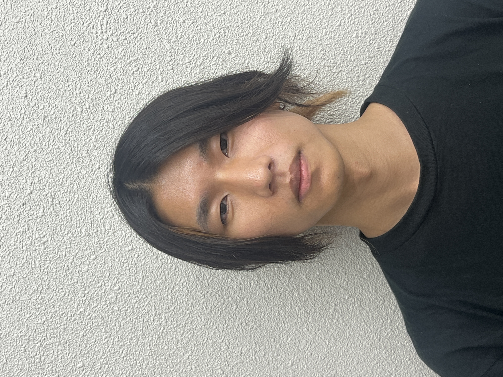

Ryo Yoshida / 吉田 遼
Ph.D. student at The University of Tokyo / Jool Corp. CTO
My research interests include computational linguistics, cognitive modeling, and syntactic processing.
yoshiryo0617 [at] g.ecc.u-tokyo.ac.jp
Publications
International
2026
-
Proceedings of the 64th Annual Meeting of the Association for Computational Linguistics (Volume 1:Long Papers) (ACL 2026) (acceptance rate: 18.9%)
-
Proceedings of the 64th Annual Meeting of the Association for Computational Linguistics (Volume 1:Long Papers) (ACL 2026) (acceptance rate: 18.9%)
-
Brain-to-Text Decoding with Brain Atlases and Brain Foundation ModelsProceedings of the Workshop on Cognitive Modeling and Computational Linguistics (CMCL 2026)
-
To appear in Transactions of the Association for Computational Linguistics (TACL)
2025
-
Proceedings of the 29th Conference on Computational Natural Language Learning (CoNLL 2025) (acceptance rate: 18.4%)
-
Proceedings of the 29th Conference on Computational Natural Language Learning (CoNLL 2025) (acceptance rate: 18.4%)
-
Proceedings of the 63rd Annual Meeting of the Association for Computational Linguistics (Volume 1: Long Papers) (ACL 2025) (acceptance rate: 20.3%)
-
Proceedings of the 63rd Annual Meeting of the Association for Computational Linguistics (Volume 1: Long Papers) (ACL 2025) (acceptance rate: 20.3%)
2024
-
Proceedings of the 62nd Annual Meeting of the Association for Computational Linguistics (Volume 1: Long Papers) (ACL 2024) (acceptance rate: 21.3%)
-
Findings of the Association for Computational Linguistics: ACL 2024 (ACL 2024 Findings) (acceptance rate: 43.4%)
-
Annual Meeting of the Cognitive Science Society (CogSci 2024) (oral presentation acceptance rate: 19%)
-
Proceedings of the 2024 Joint International Conference on Computational Linguistics, Language Resources and Evaluation (LREC-COLING) (LREC-COLING 2024) (acceptance rate: 44%)★ Best Paper Award
Neurobiology of Language, Vol. 5, No. 1, pp. 201–224 (2024)
2022
-
Findings of the Association for Computational Linguistics: EMNLP 2022 (EMNLP 2022 Findings) (acceptance rate: 36%)
-
Proceedings of the Society for Computation in Linguistics (SCiL 2022) (oral presentation acceptance rate: 47.4%)
2021
-
Proceedings of the 2021 Conference on Empirical Methods in Natural Language Processing (EMNLP 2021) (acceptance rate: 17.9%)
-
Proceedings of the 59th Annual Meeting of the Association for Computational Linguistics and the 11th International Joint Conference on Natural Language Processing (Volume 1: Long Papers) (ACL-IJCNLP 2021) (acceptance rate: 21.3%)
Domestic
2026
-
サプライザルによってガーデンパス効果を説明できる言語モデルは存在する言語処理学会第32回年次大会 (NLP2026)
-
脳アトラス・脳基盤モデルを用いた脳-テキストデコーディング言語処理学会第32回年次大会 (NLP2026)
-
言語モデルの言語獲得装置言語処理学会第32回年次大会 (NLP2026)
-
認知デコーディング：眼球運動による大規模言語モデルの読みやすさ制御言語処理学会第32回年次大会 (NLP2026)
-
BCCWJ-Brain：言語モデル評価のための脳情報処理ベンチマーク言語処理学会第32回年次大会 (NLP2026)
2025
-
自然言語処理 Vol. 32, No. 4, pp. 1304–1309 (学会記事)
-
脳基盤モデルを用いた脳-テキストデコーディングNLP若手の会第20回シンポジウム (YANS 2025)
-
作業記憶の発達的特性が言語獲得の臨界期を形成する言語処理学会第31回年次大会 (NLP2025)★ 最優秀賞
-
自然言語における冪則と統語構造の関係の再考言語処理学会第31回年次大会 (NLP2025)
-
Derivational Probing：言語モデルにおける統語構造構築の解明言語処理学会第31回年次大会 (NLP2025)
-
BCCWJ-MEG：日本語脳磁図データの構築言語処理学会第31回年次大会 (NLP2025)
-
アテンションが記憶想起の認知モデルたりうるならば、記憶の表現としては何が妥当か？言語処理学会第31回年次大会 (NLP2025)
2024
-
どのような言語モデルが不可能な言語を学習してしまうのか？---語順普遍を例に---言語処理学会第30回年次大会 (NLP2024)★ 優秀賞
-
工学的性能と人間らしさの関係はトークン分割に依存する言語処理学会第30回年次大会 (NLP2024)
-
Tree Planted Transformer: 統語的大規模言語モデルの構築に向けて言語処理学会第30回年次大会 (NLP2024)
2023
-
極小主義に動機づけられた統語的教示に基づく言語モデル言語処理学会第29回年次大会 (NLP2023)
-
CCGによる日本語文処理のモデリング言語処理学会第29回年次大会 (NLP2023)
-
チョムスキー階層とニューラル言語モデル言語処理学会第29回年次大会 (NLP2023)
-
左隅型再帰的ニューラルネットワーク文法による日本語 fMRI データのモデリング言語処理学会第29回年次大会 (NLP2023)
-
統語的構成や自己注意を持つ言語モデルは「人間らしい」のか？言語処理学会第29回年次大会 (NLP2023)
2022
-
チョムスキー階層とニューラル言語モデルNLP若手の会第17回シンポジウム (YANS2022)
-
トランスフォーマー文法言語処理学会第28回年次大会 (NLP2022)
-
自然言語処理 Vol. 29, No. 1, pp. 253–258 (学会記事)
2021
-
再帰的ニューラルネットワーク文法による人間の文処理のモデリング言語処理学会第27回年次大会 (NLP2021)★ 若手奨励賞
-
予測の正確な言語モデルがヒトらしいとは限らない言語処理学会第27回年次大会 (NLP2021)★ 委員特別賞
-
日本語の読みやすさに対する情報量に基づいた統一的な解釈言語処理学会第27回年次大会 (NLP2021)
2020
-
再帰的ニューラルネットワーク文法によるヒト文処理のモデリング日本言語学会第161回大会
Grants
- JST ACT-X — Oct 2025 – Mar 2028 · 4,500,000 yen
- JSPS Research Fellowship for Young Scientists (DC2) — Apr 2024 – Mar 2026 · 200,000 yen / month + 1,500,000 yen
- SPRING GX — Apr 2023 – Mar 2026 · 180,000 yen / month + 340,000 yen / year
Awards
- Best Paper Award at NLP2025 (言語処理学会第31回年次大会, 最優秀賞, 1/765=0.1%)
「作業記憶の発達的特性が言語獲得の臨界期を形成する」 - Best Paper Award at LREC-COLING 2024 (1/1554=0.06%)
"Targeted Syntactic Evaluations on the Chomsky Hierarchy" - Outstanding Paper Award at NLP2024 (言語処理学会第30回年次大会, 優秀賞, 12/599=2.0%)
「どのような言語モデルが不可能な言語を学習してしまうのか？---語順普遍を例に---」 - Best Master's Thesis Award (東京大学大学院 総合文化研究科 一高記念賞, 2023)
"Human-Like Language Models: Composition, Attention, or Both?" - Young Researcher Award at NLP2021 (言語処理学会第27回年次大会, 若手奨励賞, 11/247=4.5%)
「再帰的ニューラルネットワーク文法による人間の文処理のモデリング」 - Special Committee Award at NLP2021 (言語処理学会第27回年次大会, 委員特別賞, 14/361=3.8%)
「予測の正確な言語モデルがヒトらしいとは限らない」
Experience
- CTO, Jool Corp. — Apr 2026 – Present
- Research Part-time Worker, Isono Laboratory, NINJAL — Apr 2026 – Present
- Research Part-time Worker, Yanaka Laboratory, RIKEN — Nov 2025 – Present
- JSPS Research Fellow (DC2), Japan Society for the Promotion of Science — Apr 2024 – Mar 2026
- CTO, Jool Corp. — Apr 2022 – Mar 2024
- Research Staff, The University of Tokyo — Nov 2021 – Mar 2023
- AI Engineering Internship, ELYZA, Inc. — May 2020 – Oct 2022
Education
- Doctor of Arts, Department of Language and Information Sciences, Graduate School of Arts and Sciences, The University of Tokyo — Apr 2023 – Present (Supervisor: Prof. Yoshifumi Kawasaki)
- Master of Arts, Department of Language and Information Sciences, Graduate School of Arts and Sciences, The University of Tokyo — Apr 2021 – Mar 2023
- Bachelor of Arts, Department of Humanities and Social Sciences, College of Arts and Sciences, The University of Tokyo — Apr 2017 – Mar 2021